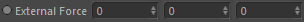

Inports
[Verlet] Old C4D Position
Required if 'Integrator' is set to 'Verlet'. This is the old position (for example the position from the previous frame).
Given in Cinema 4D space coordinates.
[Euler] Current Velocity
Required if 'Integrator' is set to 'Euler-Croma'. This is the current velocity to update.
Current C4D Position
The current position to update. Given in Cinema 4D space coordinates.
External Force

An external force vector (direction and length).